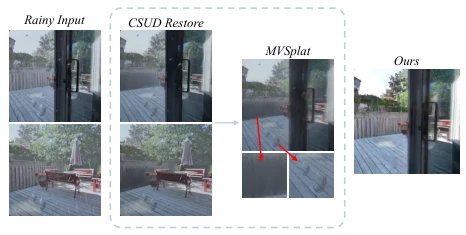
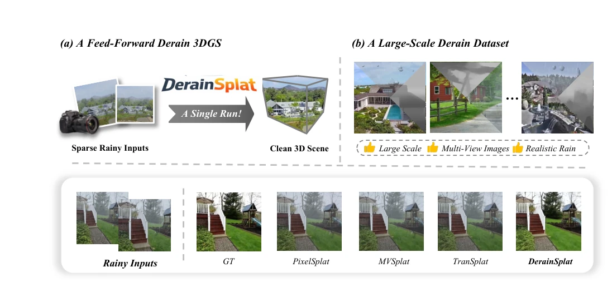
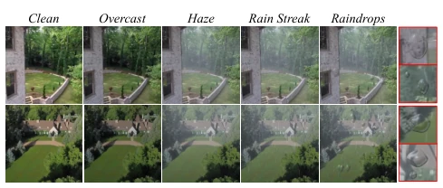
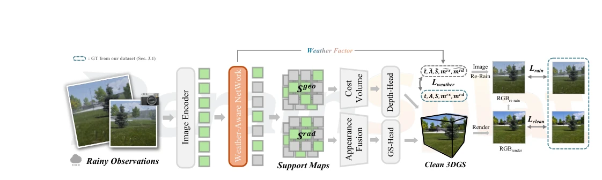
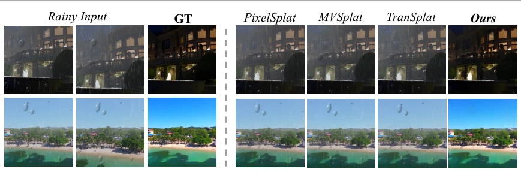
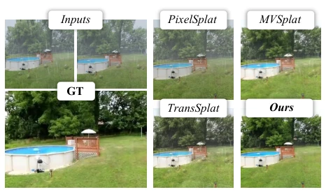
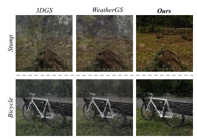
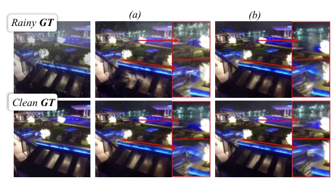
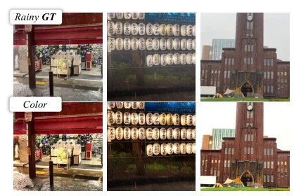

It is an industry consensus that 3DGS collapses directly in rainy conditions, this paper attempts to address it directly using 'feed-forward'. DerainSplat constructed a four-stage synthetic dataset, simulating rain and fog lenses quite realistically, and developed a weather network to predict factors. Although claimed to be feed-forward, training still relies on synthetic data for sufficient feeding. The most ingenious part is the 'rainy cycle consistency', rendering back to clean and adding rain back, forcing alignment, effectively adding a physical constraint to the model. However, can it truly generalize to real scenes like HydroViews? After all, the training set is entirely synthetic, this generalization capability remains to be verified. But compared to two-stage strategies, it indeed solves the pain point of cross-view inconsistency, at least preventing embodied intelligence from being 'blind' in the rain, counting as a small step in adverse weather perception.
研究动机Motivation
具身智能和自动驾驶依赖干净 3D 场景进行感知决策，但现有 2D 去雨方法忽略几何一致性 (Zamir et al. 2021, 2022)。现有前馈 3DGS 方法假设输入干净 (Charatan et al. 2024; Chen et al. 2024c)，雨天输入导致匹配失效。两阶段策略（先 2D 去雨再 3D 重建）虽可行但缺乏跨视图一致性 (Fig 2)，导致重建平滑或伪影。现有 per-scene 优化方法泛化性差 (Qian et al. 2025)。因此，需要一种能直接从稀疏雨天视图重建干净 3D 场景的前馈框架，且需解决天气因子解耦与几何一致性难题，填补清洁输入假设与实际雨天条件的差距。
Embodied intelligence and autonomous driving rely on clean 3D scenes for perception and decision-making, but existing 2D deraining methods ignore geometric consistency (Zamir et al. 2021, 2022). Existing feed-forward 3DGS methods assume clean input (Charatan et al. 2024; Chen et al. 2024c), rainy input leads to matching failure. Two-stage strategies (2D deraining first then 3D reconstruction) are feasible but lack cross-view consistency (Fig 2), leading to reconstruction smoothing or artifacts. Existing per-scene optimization methods have poor generalization (Qian et al. 2025). Therefore, a feed-forward framework is needed that can reconstruct clean 3D scenes directly from sparse rainy views, and must solve the difficulties of weather factor disentanglement and geometric consistency, bridging the gap between clean input assumptions and actual rainy conditions.

Figure 2: Failure of a two-stage strategy. Individually plau- sible restored views lack cross-view consistency.
方法Method
DerainSplat 是天气感知的前馈 3DGS 框架。1. 数据集：基于 RealEstate10K 等，通过四阶段合成（全局阴天、深度相关雾、雨丝、镜头水滴）生成多视图去雨数据集，提供传输、气光等特权因子。2. 天气网：编码器 - 解码器结构预测解耦因子，转为 Scene Support 和 Radiance Support。Scene Support 调制 Cost-Volume 匹配，抑制退化区域；Radiance Support 驱动深度对齐外观融合。3. 几何与高斯：几何证据衰减高斯不透明度，减少伪结构。4. 损失：包含干净重建损失、天气监督损失及雨天循环一致性损失（重渲染干净视图 + 预测因子对齐输入），确保天气因子与渲染一致。
DerainSplat is a weather-aware feed-forward 3DGS framework. 1. Dataset: Based on RealEstate10K etc., generating multi-view derain datasets through four-stage synthesis (global overcast, depth-related fog, rain streaks, lens droplets), providing privileged factors such as transmission and airlight. 2. Weather Network: Encoder-decoder structure predicts disentangled factors, converted to Scene Support and Radiance Support. Scene Support modulates Cost-Volume matching, suppressing degraded areas; Radiance Support drives depth-aligned appearance fusion. 3. Geometry and Gaussian: Geometry evidence attenuates Gaussian opacity, reducing pseudo-structures. 4. Loss: Includes clean reconstruction loss, weather supervision loss, and rainy cycle consistency loss (re-render clean view + predict factors align input), ensuring weather factors are consistent with rendering.

Figure 1: (a) Given each rainy context view, DerainSplat predicts a clean 3D Gaussian scene in a single forward pass. (b) We build a large-scale multi-view derain dataset with paired clean–rain images and privileged weather factors. DerainSplat renders cleaner novel views than existing feed-forward baselines, with fewer rain/haze artifacts and stronger structural fidelity.

Figure 3: Stage-wise visualizations of the derain dataset syn- thesis process. Starting from clean images, we sequentially synthesize overcast appearance, depth-dependent haze, rain streaks, and lens raindrops to obtain final rainy observations.

Figure 4: Overview of DerainSplat. Rainy context views are processed by the weather net to estimate weather factors (ˆt, ˆA, ˆS, ˆ mrs, ˆ mrs) and support maps that guide cost-volume matching, apearance fusion, and opacity, yielding clean 3DGS.
Tested on Rainy RE10K, ACID, Mip-NeRF360, and real HydroViews. Compared with PixelSplat, MVSplat, TranSplat, and 3DGS, WeatherGS. DerainSplat PSNR improvement on synthetic set exceeds 4dB, superior to two-stage strategy (CSUD+MVSplat). Ablation shows Support Maps and Cycle Loss are key. Real scene qualitative performance is good, rain streak geometry prediction consistent with synthetic. Proves the effectiveness of weather-aware design, and inference speed is fast, supporting real-time reconstruction.

Figure 7: Qualitative comparison of novel views on rainy RealEstate10K and ACID datasets. Compared with feed-forward baselines, DerainSplat yields cleaner novel views with fewer rain/haze artifacts and clearer scene structures.

Figure 8: Finetuned qualitative comparison on rainy RE10K.

Figure 9: Qualitative comparison on rainy Mip-NeRF360.

Figure 11: Comparison of rainy-cycle consistency. The upper and lower rows are produced without and with the cycle loss, respectively; (a) and (b) trained 1K and 10K steps.

Figure 10: Qualitative results on real-world rainy scenes.